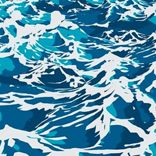
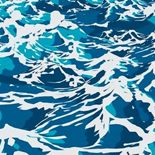
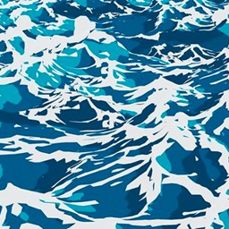

Target Appearance
Our DyNCA model learns a desired texture pattern from a given target
appearance image.
 



Neural Cellular Automata (NCA) is a class of Cellular Automata where the update rule is parameterized by a neural network that can be trained using gradient descent. We find that existing NCA models tend to overfit the training discretization, especially in the proximity of the initial condition, also called "seed". To address this, we propose a solution that utilizes uniform noise as the initial condition. We demonstrate the effectiveness of our approach in preserving the consistency of NCA dynamics across a wide range of spatio-temporal granularities. Our improved NCA model enables two new test-time interactions by allowing continuous control over the speed of pattern formation and the scale of the synthesized patterns. We demonstrate this new NCA feature in our interactive online demo. Our work reveals that NCA models can learn continuous dynamics and opens new venues for NCA research from a dynamical systems' perspective.

Starting from a seed state, DyNCA iteratively updates it, generating an image sequence. We extract images from this sequence and compare them with an appearance target as well as a motion target to obtain the DyNCA training objectives. After training, DyNCA can adapt to seeds of different height and width, and synthesize videos with arbitrary length. Sequentially applying DyNCA updates on the seed synthesizes dynamic texture videos in real-time.
The figure below illustrates a single DyNCA step.

Given an input state $\mathbf{S}^t \in R^{H \times W \times C}$ at time step $t$, each cell perceives its neighbors on various scales with the same perception layer. The perception tensor of each scale is then upsampled and summed up, and is concatenated with the positional encoding tensor $\mathbf{P}_{xy}$. Each cell $s^t_{ij}$ then applies the same update rule, parametrized by a small neural network. Finally, all cells perform stochastic residual update to determine the state of the cells in time $t + \Delta t$.
Our DyNCA model learns a desired texture pattern from a given target
appearance image.

Our model can learn motion from a target video and transfer this motion to the target
appearance image.
Our model synthesizes realistic dynamic texture videos. Each synthesized video frame resembles the target appearance, while the the concatenation of frames induces the motion of the target dynamics.
@InProceedings{,
title = {Neural Cellular Automata Foundation Model},
author = {Qing Li, Weiqing Chen, Guangyu Wang},
booktitle = {Proceedings},
year = {2025},
}